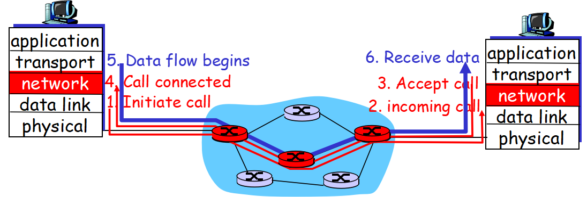
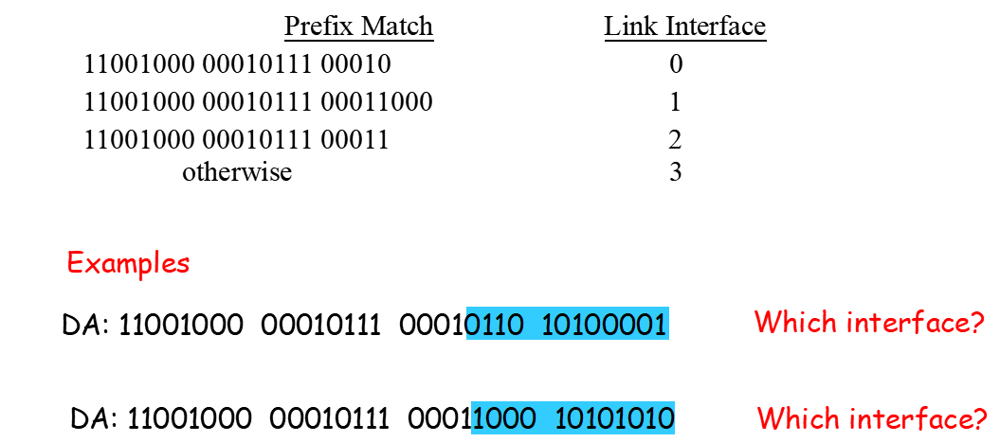
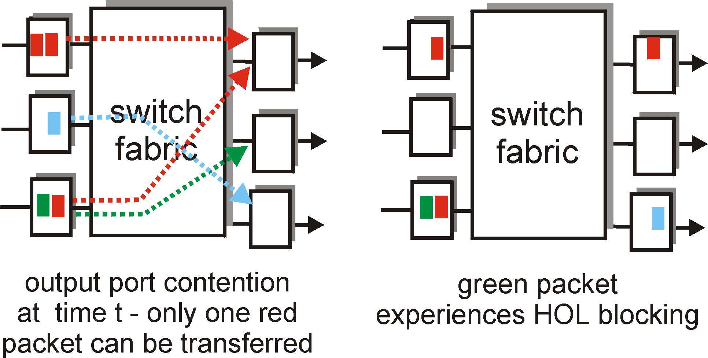
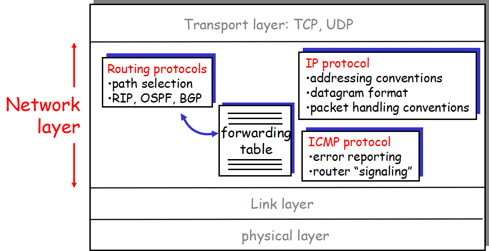
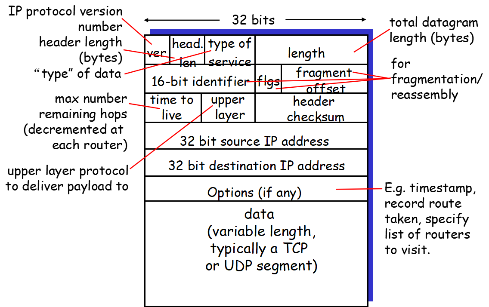
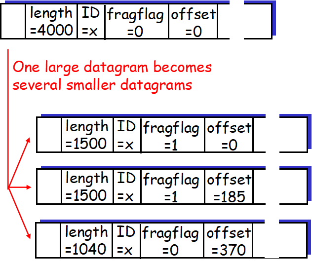

ComputerNetwork第四章
计算机网络学习心得
第四章 网络层
关键术语
- forwarding(转发)
- routing(路由选择)
- longest prefix matching rule(最长前缀匹配规则)
- fragmentation(分片)
- MTU(最大传输单元,Maximum Transmission Unit)
- subnet(子网)
- network mask(子网掩码)
主要内容与问题
概述
网络层取得来自运输层的报文段(segment)，将其封装成一个数据报(datagram)。路由器的主要作用就是将数据报(datagram)从入链路转发到出链路。
网络层的三个重要功能：forwarding(转发), routing(路由选择) and connection setup(连接建立)。
forwarding：路由器将一个分组从入链路转到合适的出链路(一个路由器连接了很多链路的)。
routing：网络层决定分组传输过程中所经过的路由器路径。
总之，转发是帮一个分组在路由器内部找方向，而路由选择是在整个网络中找到这个分组传输的合理路径。(书中也举了个例子，从A到B行驶车辆，立交桥类似于路由器，转发就是车辆在立交桥里面怎么走，怎么找到出口。而路由选择就是车辆是从A到B的整体行程规划)。
每台路由器都有一个forwarding table用来决定该如何转发它接收到的分组(datagram)。
virtual circuit and datagram networks
在网络层中的服务是提供给运输层的，在运输层中服务提供给应用层的。运输层实现的面向连接的服务和网络层实现的连接服务是根本不同的，运输层连接服务只面向端系统，而网络层连接服务不仅面向网络边缘的端系统还面向网络核心的路由器。
virtual circuit：仅在网络层中提供连接服务的网络。
datagram network：仅在网络层中提供无连接服务的网络。
其中因特网是数据报网络，而ATM和帧中继的体系结构是虚电路网络。
virtual circuit(VC)
虚电路的组成：- 源和目的主机之间的路径
- VC号(沿着该路径每段链路的一个号码)
该路径下每台路由器的转发表表项
该虚电路下的分组首部携带VC号，用来指示下一个路由器，每经过一个路由器，该路由器就用转发表表项中的VC号替代该分组首部VC号(故分组首部的VC号不断更新)。当跨越一个路由器创建一条虚电路，该路由器的转发表就增加一个新表项(一行)，这条虚电路被拆除时，该路由器转发表中对应的表项也删除。虚电路建立有三个阶段：
- 虚电路建立。网络层指定分组发送的路径，也为该路径的每条链路决定一个VC号，为该路径下每台路由器转发表添加新的表项。网络层还可以预留虚电路所需要的资源。
- 数据传送。如图
 - 拆除虚电路。每台路由器完全知道经过他的所有虚电路，网络层通知另一端系统结束呼叫，拆除虚电路。
datagram network
因特网应用的数据报网络。分组靠目的端系统的地址来发送，不建立虚电路，路由器不维护任何虚电路状态信息(VC号)。每台路由器有一个将目的地址映射到转发链路接口的转发表。
longest prefix matching rule(最长匹配原则):
路由器用分组目的地址的前缀对转发表项进行匹配，遵循最长匹配原则。

注：在数据报网络中一系列分组可能在通过网络时走不同的路径，有可能乱序到达，因为转发表能够在任何时候被修改。
路由器工作原理
Routing and router control plane are based on software. Router forwarding plane is based on hardware.
- 路由转发表会在输入端口存放副本，所以路由器可以在输入端口本地做出转发决策。交换结构一次只能传送一个分组到某指定端口。
- 输出端口排队：并行输入的分组被转发到同一个输出端口就会形成排队，当输出端口缓存占满时就形成丢包或排队延时。
- HOL(Head-Of-the-Line) blocked：位于线路后部的分组要等待位于线路前部的分组从交换结构中传输到输出端口。如图描述，很好理解。

IP(网际协议，Internet Protool)
IP协议的主要作用就是在因特网中的编址和转发
网络层有三个重要组成部分：IP协议，ICMP协议，routing protocol(路由选择协议)
datagram format

前五行总共160比特，所以是160/8=20字节，所以IP和TCP一样具有20字节的首部长度~IP datagram fragmentation
一个链路层帧能承载的最大数据量就称为MTU，因为IP数据报传给链路层的时候，它的大小是受链路层MTU严格限制的。但是每段链路的MTU可能不一致，所以对于一些链路IP数据报可能会超出MTU，就得进行分片(fragmentation)操作。
分片就得组合，在路由器中组合显得很麻烦，所以IP数据报片段的组合是在端系统中完成的，即送到再组合。由于IP是不可靠的，可能有些片丢失，所以最后一个片标志比特设置为1，其他片设置为0。而偏移字段用来指示片的原本位置，标识号使目的主机确认这些片是否来自同一个源数据报。
注：偏移值以8字节块为单位。
如图所示，一个4000(20字节IP首部，3980字节IP有效载荷)字节数据报的传输，链路MTU为1500字节。分开的每个小数据报都需要20字节首部，所以分片其实增加了一些冗余字节。其中offset的计算用除去头部的有效数据段/8。
